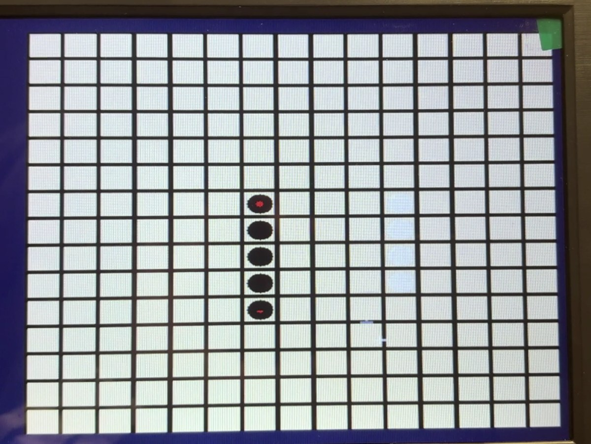
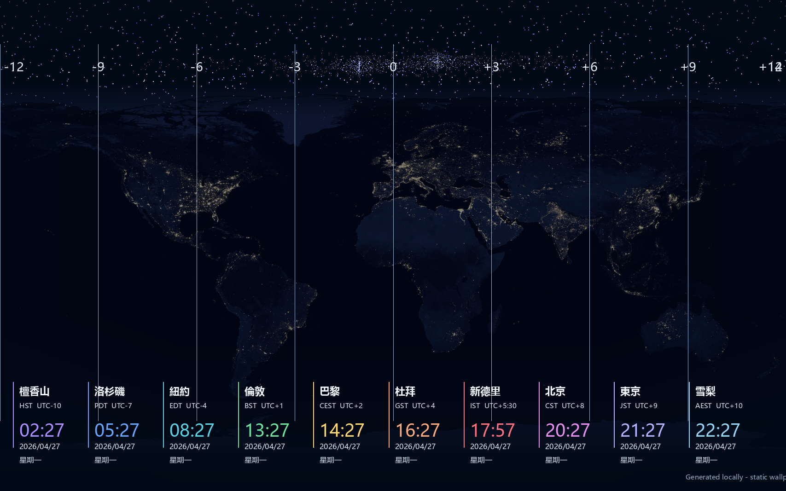
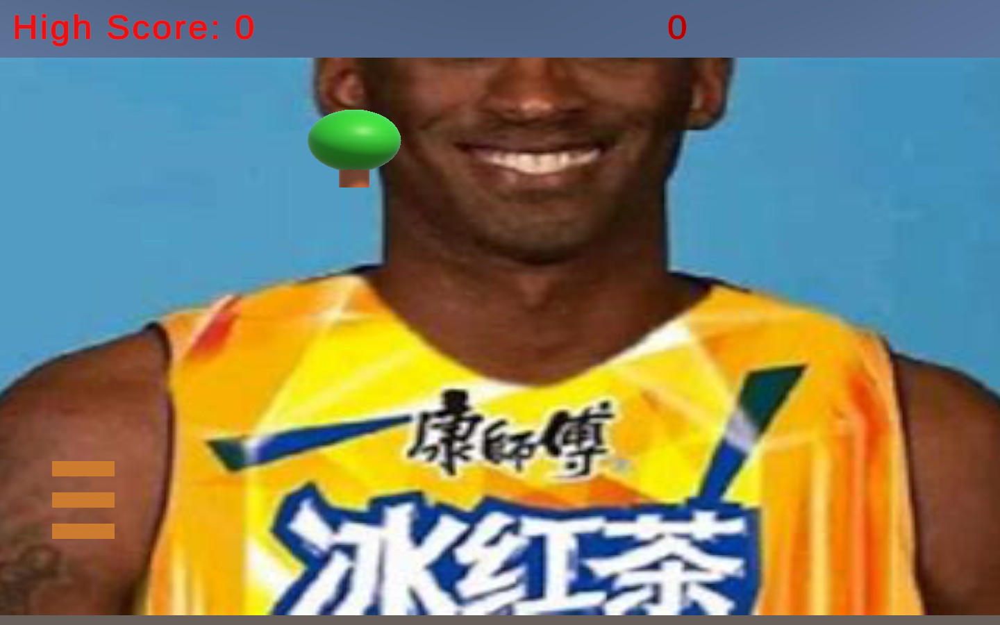

FPGA Gomoku
A five-in-a-row game built in VHDL on an Artix-7 FPGA: VGA rendering, PS/2 mouse control, undo, win detection and a heuristic AI opponent.

A five-in-a-row game built in VHDL on an Artix-7 FPGA: VGA rendering, PS/2 mouse control, undo, win detection and a heuristic AI opponent.

A night-world-map wallpaper with a Rainmeter overlay for ten live city clocks, plus Windows startup and recovery scripts.
Software for study, writing and everyday workflows.
A one-click SUSTech Blackboard downloader with a graphical interface and file selection.
An information sorting and reporting tool in progress, designed to turn fragmented input into clearer summaries.
A local diary generator using Codex, with audio transcription and LaTeX export.
A local Google Calendar dashboard with history sync, structured analysis, visualizations and a Windows EXE.
Packages YouTube courses into three LaTeX reports for study, interviews and research, with mind-map images and a Windows EXE.

One collection of Unity coursework: two game prototypes, with supporting C# exercises and scene notes.
A course project record from Shenzhen University, including Unity game development exercises and implementations.